The diallel is the classic design for choosing parents: you cross a set of lines among themselves and separate what each one passes on to all its crosses (general combining ability) from what appears only in particular combinations (specific combining ability). Block 4 runs Griffing’s (1956) analysis with its four methods and two models, in one or in several environments, and helps you choose the best parents and crosses.
Griffing (1956) distinguished four ways of running a diallel with p parents, depending on whether the parents themselves and the reciprocal crosses are evaluated, and two ways of interpreting the results, depending on whether the parents matter in their own right or represent a population.
Model I treats the parents as fixed: they are the ones of interest, and what you are after are their effects (which one passes on more, which cross stands out). Model II treats them as a random sample from a population: what matters are the variances of that population, from which the additive variance, the dominance variance and the heritabilities are derived. Both models fit the same equation; the F tests and the interpretation change.
The mean of the cross i × j is the grand mean plus the general combining ability (GCA) of each parent, gi and gj, plus the specific combining ability (SCA) of the pair, sij, plus the reciprocal effect rij, which exists only in Methods 1 and 3. The reciprocal effect splits into a maternal part, mi − mj, which depends only on which parent was the female, and a non-maternal part, nij (Cockerham, 1963). Griffing’s restrictions (Σgi = 0 and the SCA effects of each parent summing to zero) make the effects read as deviations from the average of the set.
Throughout the chapter you will use the full 4 × 4 maize diallel of Pérez López et al. (2020): four lines, L1 to L4, with their 12 direct and reciprocal crosses and the lines themselves, in complete blocks with six replications; the trait is grain test weight (PVG, in g/L). It is a Method 1 diallel, with everything the block can show, and its published results let you check the app. Section 4.8 uses the simulated α-lattice of Chapter 3 for the analysis across several environments.
Block 4 does not read files: it takes the adjusted means of each entry and the error of each environment from Block 3, with any observations you excluded there. If the loaded data are not a complete Griffing diallel, the card tells you which block analyzes them (partial diallels, the North Carolina designs and line × tester in Block 6; generations in Block 7; genotype trials in Block 8 or 9). The card 1 · Data and model summarizes the data in one line and offers the controls in Table 4.1.
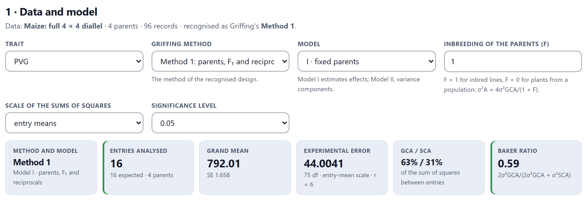
| Control | Options | What it is for |
|---|---|---|
| Trait | those of Block 3 | The whole block is recomputed for the chosen trait |
| Griffing method | those the data contain | Analyze a subset of the entries, as if the experiment had been designed with that method; the recognized one is marked |
| When reciprocals are dropped | direct cross · average of both orientations | Only in Methods 2 and 4 with data that include reciprocals: which value represents each pair |
| Model | I · fixed parents · II · random parents | Which F tests are shown first and how the components are read |
| Environments | fixed · random | With several environments: what each effect is tested against (Section 4.8) |
| Inbreeding of the parents (F) | from 0 to 1; 1 by default | Converts σ²GCA and σ²SCA into σ²A and σ²D: 1 for inbred lines, 0 for plants from a population |
| Scale of the sums of squares | entry means · plots | Changes only the presentation; the F tests are the same |
| Significance level | 0.05 · 0.01 · 0.10 | For the least significant differences and the readings |
With the maize data, the block analyzes the 16 entries expected in Method 1, with a grand mean of 792.01 g/L and an error of 44.0041 (the error mean square from Block 3 divided by the six replications) with 75 degrees of freedom. GCA accounts for 63% of the sum of squares between entries and SCA for 31%; the rest are reciprocal effects. The entries tile turns amber if any entry of the complete design is missing.
With data from a Method 1 diallel you can request Methods 2, 3 or 4: the block takes only the entries that method uses (without reciprocals, without parents, or without either), repeats the Block 3 field analysis with them and estimates its own error. This gives you what an experiment designed with that method would have produced. Section 4.7 makes the comparison of all four at once.
The card 2 · Analysis of variance of the diallel partitions the variation between entries into GCA, SCA and reciprocal effects, and the latter into maternal and non-maternal. It has two F columns: the one for the chosen model, with its p value and its denominator, and the one for the other model, on the right, so you can compare without switching models.
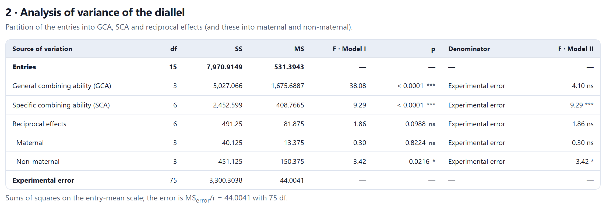
| Source | Model I (fixed parents) | Model II (random parents) |
|---|---|---|
| GCA | experimental error | SCA (approximate in Method 1) |
| SCA | experimental error | experimental error |
| Reciprocal, maternal and non-maternal | experimental error | experimental error |
In the maize data, GCA has F = 38.08 against the error (Model I), but only F = 4.10 against SCA (Model II), which is not significant with 3 and 6 degrees of freedom: with four parents there is very little information to speak about the variance of a population. That is the underlying difference between the models. Under Model I the question is whether these four lines differ (they clearly do); under Model II, whether the population they came from has additive variance, and four lines are not enough to say so.
With Scale of the sums of squares set to plots, the sums of squares are those of the source article: 30,162.40 for GCA, 14,715.59 for SCA, 2947.50 for reciprocals, 240.75 for maternal and 2706.75 for non-maternal effects, with F = 38.08, 9.29, 1.86, 0.30 and 3.42. The GCA effects and their standard errors (2.0311) also match to the last decimal.
With missing entries, the sums of squares are sequential, in the order GCA, SCA and reciprocals, and the note below the table says so. With several environments, the table adds the environments and the interactions of each source with them, and the collapsed panel Analysis within each environment repeats the analysis environment by environment (Section 4.8).
The card 3 · Effects presents the estimates with their standard error and their t test. On the left, the GCA effects sorted from highest to lowest; on the right, the standard errors and least significant differences for each kind of comparison, because not all differences have the same precision: comparing two SCA effects that share a parent is not the same as comparing two with no parent in common.
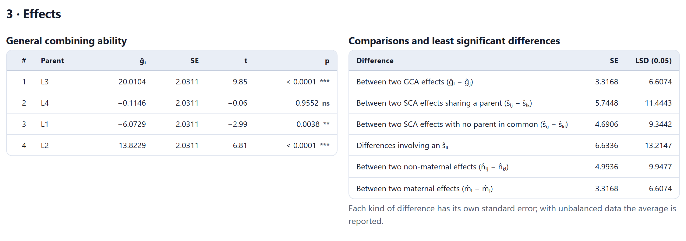
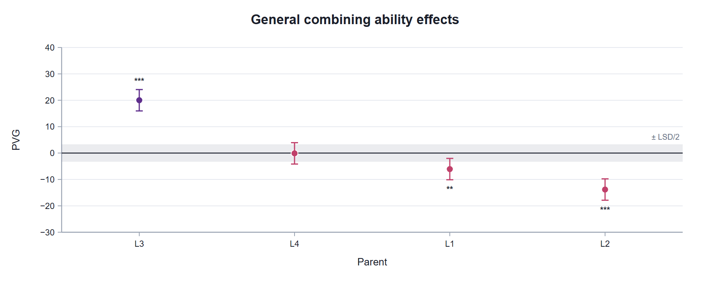
Specific combining ability is shown as a color matrix: above the diagonal, the SCA of each cross; on the diagonal, that of each parent (ŝii, in Methods 1 and 2); below, when they exist, the reciprocal effects. Red is positive and blue negative, with the significance asterisks next to the value. The full SCA table, with standard error and p, is collapsed below the figure.
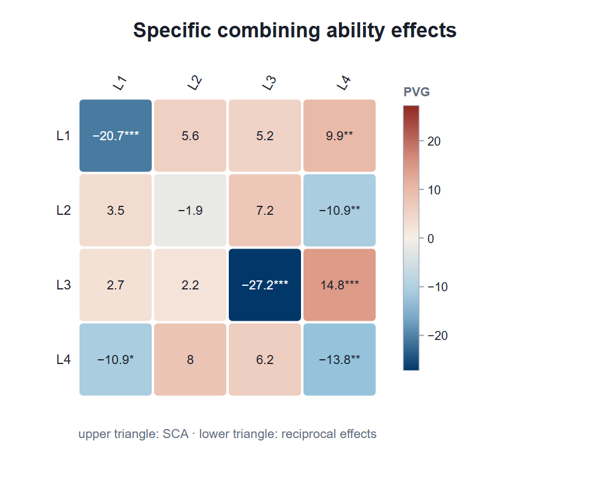
With reciprocals (Methods 1 and 3), the panel of reciprocal, maternal and non-maternal effects also appears: on the left, the maternal effect of each parent, mi; on the right, for each pair, the reciprocal effect rij and its non-maternal part nij, each with its test.
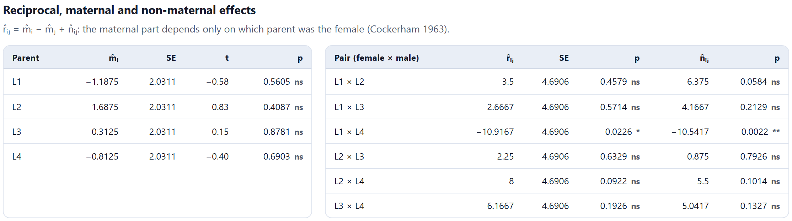
| High, significant GCA (ĝi) | The parent passes its value on to all its crosses: useful for forming populations and synthetics and for choosing the parents of a program. |
| High, significant SCA (ŝij) | The pair performs better than its GCA effects predict: useful for hybrids of that combination, not for choosing parents. |
| Maternal effect (mi) | Which parent is the female matters: use the parent in the favorable direction (cytoplasm, endosperm, seed size). |
| Non-maternal reciprocal (nij) | The direction matters only in that pair; confirm it before drawing conclusions. |
The card 4 · Variance components and genetic parameters estimates the Model II variances from Griffing’s expected mean squares (moment estimators), with their standard error and their percentage of the genetic variance. On the right it converts them into genetic parameters, and below it summarizes them in five tiles and a bar chart with intervals.
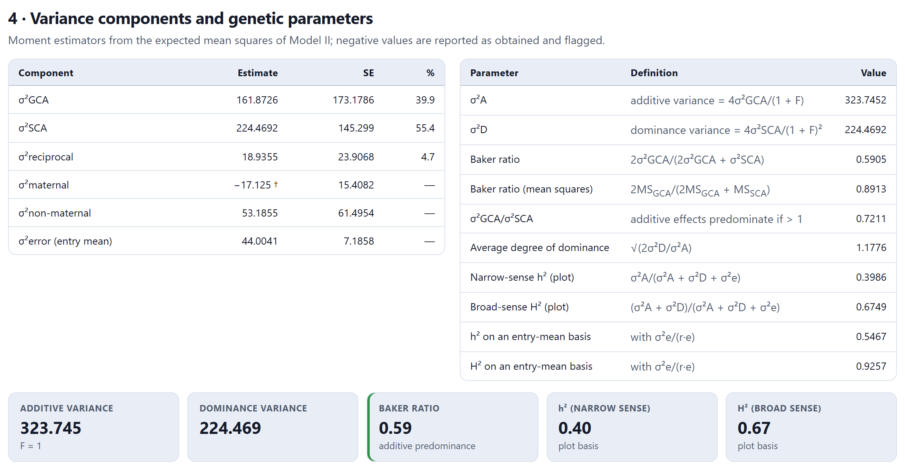
The conversions assume no epistasis, genes in linkage equilibrium and parents with the stated inbreeding F (Griffing, 1956; Wright, 1985). The Baker (1978) ratio runs from 0 to 1: close to 1, GCA predicts the crosses well and additive action dominates. Heritabilities are given on a plot basis and on an entry-mean basis (with σ²e divided by the replications and the environments). The standard errors of the components come from the variance of the mean squares, 2MS²/df.
In the maize data, σ²A = 323.75 and σ²D = 224.47; the Baker ratio is 0.59, with additive predominance, and the average degree of dominance is 1.18. Narrow-sense heritability is 0.40 on a plot basis and 0.55 on an entry-mean basis. But the standard errors tell you how far to trust those numbers: σ²GCA = 161.87 ± 173.18 is not different from zero. With four parents the variances are imprecise, and the message boxes remind you of it.
The card 5 · Best parents and crosses ranks parents and crosses according to what you are after: the Objective menu chooses the highest value (yield, grain weight) or the lowest value (days to flowering, height, incidence of a disease), and Show limits the table of crosses to 10, 20 or 50 rows, or all.
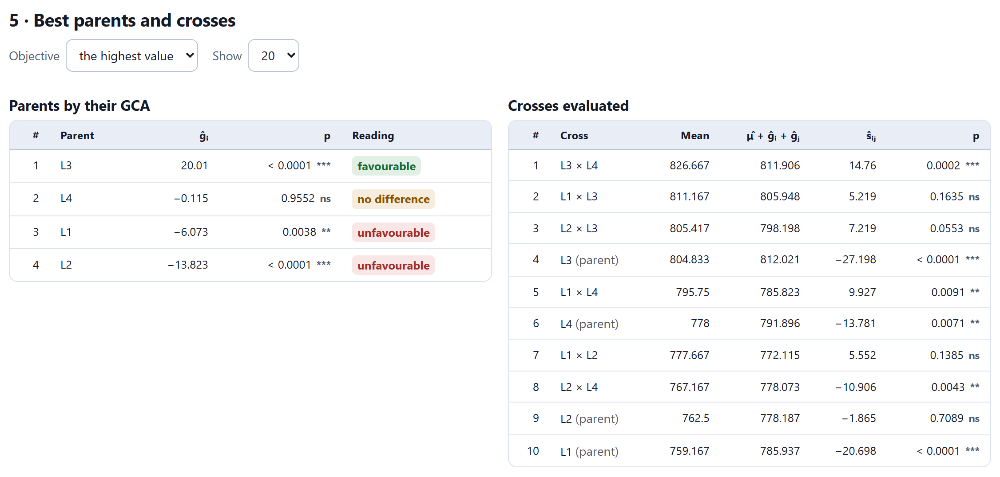
The Reading column marks each parent as favourable, unfavourable or no difference, according to the sign of its GCA and its significance in the desired direction. In the table of crosses, the difference between the observed mean and the one predicted from the GCA effects is the SCA: L3 × L4 averages 826.67 g/L, 14.76 more than L3 and L4 predict.
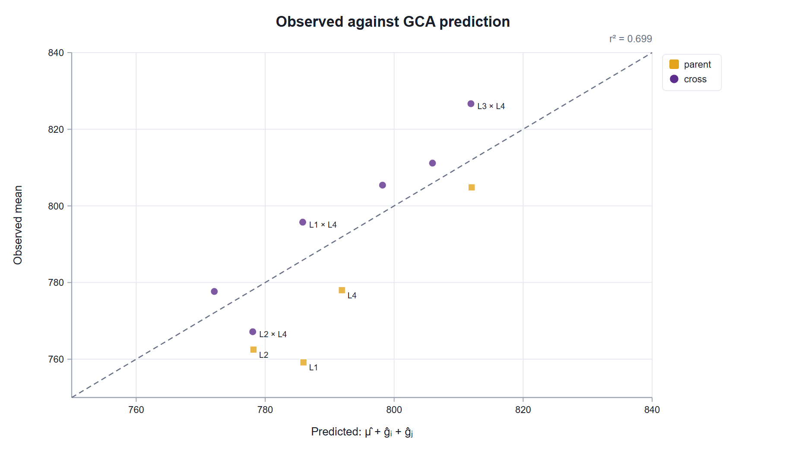
At the end of the card, a reading summarizes the results in words. With the maize data it says that the parent with the best GCA is L3, that the crosses with the highest value are L3 × L4, L1 × L3 and L2 × L3, that the outstanding specific combinations are L3 × L4 and L1 × L4 (of interest for hybrids, not for choosing parents), and that there is a significant reciprocal effect, so it pays to watch which parent is used as the female.
If crosses of the design are missing, the table Crosses not evaluated: prediction from GCA also appears, with μ + ĝi + ĝj and its standard error for each cross that was not made. It is the average expected value of the combination, without its SCA, which cannot be known without evaluating it.
The card 6 · The four methods on the same data analyzes the data with each method they contain. Each method uses its own subset of entries and estimates its own error, as if the experiment had been designed that way. The table gives the number of entries, the error, the sums of squares of GCA, SCA and reciprocals, the components, the Baker ratio and what each method estimates; the figure below compares the sums of squares or the components.
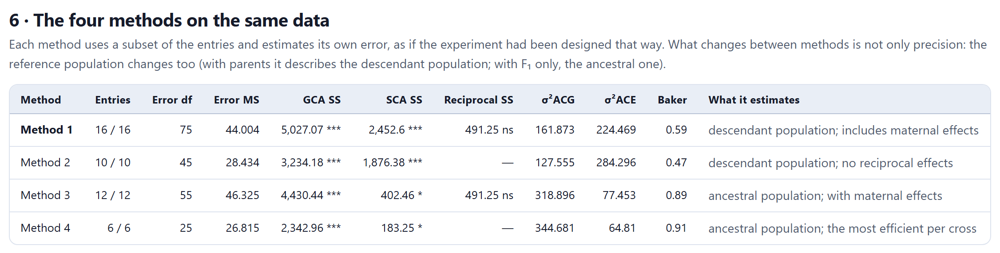
The comparison teaches something a single analysis hides. In Methods 1 and 2, the parents enter the analysis with their own very negative SCA effects (ŝii): the lines perform much worse than their crosses (inbreeding depression or, seen from the crosses, heterosis), and Griffing’s model loads that difference onto SCA. That is why σ²SCA comes out larger and the Baker ratio smaller. Among the crosses alone (Methods 3 and 4), GCA explains almost everything. None of the results is wrong: they describe different populations, the descendant one with parents and the ancestral one without them.
With data from several environments, Block 4 performs a two-stage analysis: it takes the adjusted means of each environment from Block 3 and analyzes the entries × environments table with the pooled error. The analysis of variance table adds the environments and the interaction of each source with them (GCA × environments, SCA × environments and, in Methods 1 and 3, reciprocals × environments). The Environments control decides what the effects are tested against: with fixed environments, against the error; with random environments, each effect against its interaction with the environments. Under Model II with several environments, GCA is tested with a quasi-F and Satterthwaite degrees of freedom (Singh, 1973).
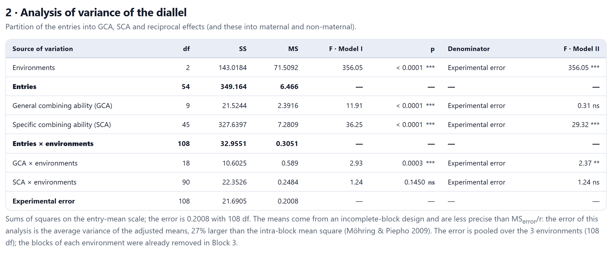
The adjusted means of an α-lattice are less precise than MSerror/r, so the error of the second stage is the average variance of the adjusted means, on the plot scale (Möhring and Piepho, 2009): in the example, 0.2008 instead of 0.1583. With balanced complete blocks the two are equal.
The figure GCA in each environment shows, for each parent, its effect at each location. Parallel lines indicate stable GCA; crossing lines, parents whose value depends on the environment. In the example, P5 is the best at Los Altos and Valle Verde and the second best at Chapultepec, while P9 goes from 0.15 at Los Altos to −0.55 at Valle Verde.
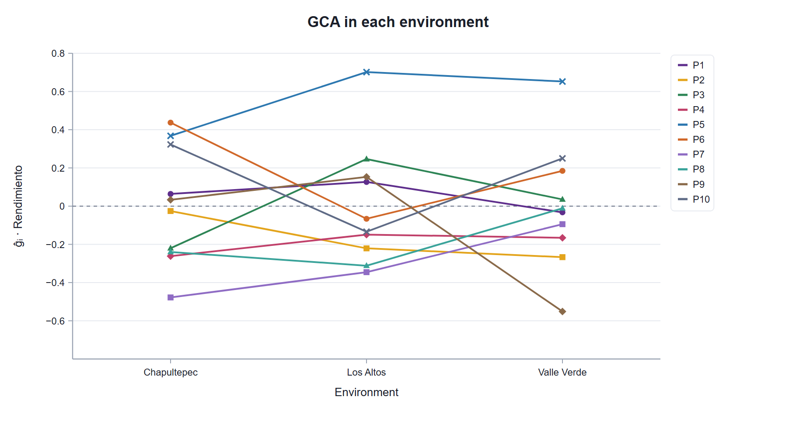
Because the data are simulated, the block compares the estimates with the truth: below the GCA table, a note gives the correlation between the ĝi and the true effects (0.863). With Method 2, σ²GCA comes out negative (−0.145) and σ²SCA very large (2.34): the crosses average 7.5 t/ha and the inbred parents 4.2, and that heterosis is added to SCA, as in Section 4.7. With Method 4, using only the crosses, the components come close to the simulated values (Table 4.3).
| Component | Estimate ± SE | True |
|---|---|---|
| σ²GCA | 0.080 ± 0.051 | 0.052 |
| σ²SCA | 0.037 ± 0.032 | 0.069 |
| σ²GCA × environment | 0.037 ± 0.024 | 0.029 |
| σ²SCA × environment | 0.063 ± 0.053 | 0 |
With ten parents, the GCA and SCA variances are estimated with few degrees of freedom and their standard errors are of the same order as the estimates themselves; this is the limitation of any small diallel, not of the program.
If Block 3 received entry means with the error of the original experiment (Section 3.8), Block 4 analyzes those means with that error. This is the case of Griffing’s (1956) example, 36 single crosses of maize from nine lines (Method 4) with an error of 21.05 with 2558 degrees of freedom on the mean scale: GCA has F = 110.49 and SCA 16.13; σ²GCA = 283.76 and σ²SCA = 318.39, with a Baker ratio of 0.64.
The block estimates the effects by least squares weighted by the number of plots, with Griffing’s restrictions imposed exactly. With complete, balanced data it reproduces Griffing’s formulas; with missing crosses or unequal replications it remains valid and the standard errors adjust to the data at hand. Because Griffing’s model has as many parameters as cells, something has to be assumed about what is missing, and the warnings in card 1 say what: SCA = 0 is assumed for the crosses that were not made, and non-maternal effect = 0 for the pairs evaluated in only one direction. With entries that have different numbers of plots, the components use the harmonic mean of the replications.
At the end of card 6, Assumptions, formulas and references summarizes the model, the restrictions, the estimation and the references, for the methods section of a paper. There are two downloads: Results (.xlsx), with six sheets (analysis of variance, effects, components, parameters, crosses with their mean, prediction and SCA, and comparison of methods), and Effects (.csv), with the grand mean and all the GCA, SCA, maternal, reciprocal and non-maternal effects with their standard error, t and p. Each figure has its own download panel.
The Continue: Hayman–Jinks → button takes you to Block 5, which analyzes the same diallel from another angle: the Wr–Vr graph, Hayman and Jinks’s genetic parameters, and Gardner and Eberhart’s analysis for varieties and heterosis.